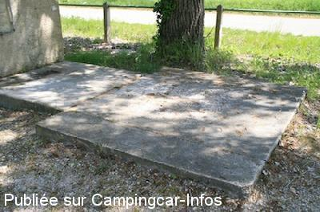
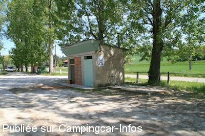
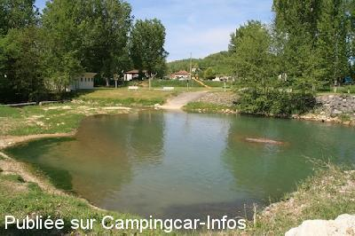

ASN = Aire de services avec stationnement nuit possible de :
LAUZERTE
(N° 522)
Accès/adresse :
D2 / D953
Vignals
82110 LAUZERTE
Vignals
82110 LAUZERTE
Latitude : (Nord) 44.26715° Décimaux ou 44° 16′ 1′′
Longitude : (Est) 1.14083° Décimaux ou 1° 8′ 26′′
Tarif : Gratuit
Type de borne : Artisanale
Services :


Poubelles
Tables de pique-nique
Aire de jeux pour enfants
Tous commerces et services à 2 km.
Autres informations :
Aire paisible, non excentrée, située auprès d'une rivière.
lauzerte.tourisme@quercy-blanc.net
http://www.quercy-blanc.net/installez/
Office du Tourisme du Quercy-Blanc Pays de Serres
Place des Cornières

Le 26/05/2011 par Renaud Delarroque

Le 26/05/2011 par Renaud Delarroque

Le 26/05/2011 par Renaud Delarroque
de
R.TV 46
le 23/08/2015 :
ami camping-cariste ne faite pas comme moi ,renseigner-vous avant votre arrivée,car les emplacements sont régulierement utilisés pour certaines manifestation...
dommage pour lauzerte
ami camping-cariste ne faite pas comme moi ,renseigner-vous avant votre arrivée,car les emplacements sont régulierement utilisés pour certaines manifestation...
dommage pour lauzerte
de
verrier jl
le 07/09/2014 :
Bonjour,
aires très agréable en bordure de rivière.
L'accès aux services est un peu rustique mais gratuit.
aire un peu bruyante la nuit, elle est au carrefour d'un axe relativement important.
aires très agréable, mais loin du centre ville.
Pas adaptée pour la visite de Lauzerte.
Bonjour,
aires très agréable en bordure de rivière.
L'accès aux services est un peu rustique mais gratuit.
aire un peu bruyante la nuit, elle est au carrefour d'un axe relativement important.
aires très agréable, mais loin du centre ville.
Pas adaptée pour la visite de Lauzerte.
de
Renaud Delarroque
le 26/05/2011 :
Effectivement le site manque d'entretien. La dalle de vidange surélevée n'est pas pratique. Dommage, l'endroit pourrait être sympa, tout près d'un village historique.
Effectivement le site manque d'entretien. La dalle de vidange surélevée n'est pas pratique. Dommage, l'endroit pourrait être sympa, tout près d'un village historique.
de
charlie
le 04/02/2011 :
De passage en novembre 2010, WC bouchés, pas de branchement électrique, à l'abandon, en bordure de route à l'intersection de deux departementales. Du coup, on s'est garé pour la nuit sur le parking du stade juste à coté, très calme, bien degagé pour les satellites et vue sur le village.
De passage en novembre 2010, WC bouchés, pas de branchement électrique, à l'abandon, en bordure de route à l'intersection de deux departementales. Du coup, on s'est garé pour la nuit sur le parking du stade juste à coté, très calme, bien degagé pour les satellites et vue sur le village.
de
GREGARIO
le 01/07/2007 :
Aire idéale pour la nuit, près d'un tout petit lac avec sanitaires. Prise d'eau et vidange artisanale, le tout gratuit. J'ai mofifié la position GPS car elle était errinnée. N 44.26715°-E 1.14048°
Aire idéale pour la nuit, près d'un tout petit lac avec sanitaires. Prise d'eau et vidange artisanale, le tout gratuit. J'ai mofifié la position GPS car elle était errinnée. N 44.26715°-E 1.14048°
de
le borgne
le 06/11/2006 :
Cette aire est située pres de l'éco-marché, à l'intersection de la D2 et de la D953, et il y a des W.C. publics
Cette aire est située pres de l'éco-marché, à l'intersection de la D2 et de la D953, et il y a des W.C. publics